QML 基础
- QML 与 QtQuick 的关系
- QML文档的加载方法
- 布局与常用控件
QML 与 QtQuick
QML（Qt Modeling Language）是一种声明式脚本，语法标记跟 JSON（JavaScript Object Notation）或CSS 比较相似。QML用于快速构建用户界面对象树，并且可以使用JavaScript代码来实现交互，支持动画、属性绑定等功能。
Qt Quick是一个Qt模块，它封装了许多现成的QML组件，包括界面布局、控件、动画等组件。
因此，在QML文档中经常会导入QtQuick模块，例如：
上述例子用 Window 定义窗口的标题、尺寸与可见性，并在窗口中声明一个宽 120、高 80、绿色填充的矩形，效果如图 19-1 所示。
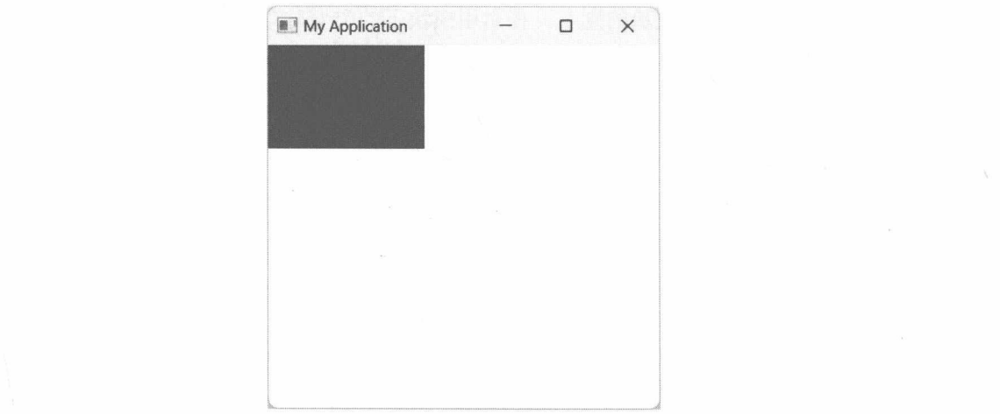
QML 文档的结构
QML文档由两部分组成。
- import语句块。导入要使用的 QML模块、命名空间，或者JavaScript文件。
- 声明语句块。构建QML对象树，用于描述用户界面。注意：一个QML文档只能出现一个根对象（Root Object)。下面的声明语句是错误的。
因为上述文档声明了两个根对象。
19.2.1 import 语句
import 语句的格式如下：
版本号是可选的，如果不指定，默认导入最新版本，例如：
as子句也是可选的，可以给导入的对象分配一个标识（类似于起一个别名），例如：
那么，other就是 computer模块的别名，在引用模块下的类型时，必须加上 other前缀，即
as子句可以解决命名冲突。例如，A模块中有类型T，B模块中也声明了类型T，当同时导入两个模块时：
QML引擎无法分析出声明语句中用的是A模块中的T，还是B模块中的T。于是，可以在导入时分配一个别名：
aa.T和 bb.T可以明确地把两个 T类型区分开来。
19.2.2 对象声明
声明语句用于描述QML文档中将使用哪些类型来构建对象树。声明部分只允许存在一个根对象。
对象的声明格式与CSS类似——在类型名称后面是一对大括号(类型名称与大括号之间可以有空格)。
例如，下面的语句声明程序窗口对象：
当然，大括号也可以另起一行：
如果Window对象包含其他对象，其格式也是类似的，例如：
上述 QML 文档表示 Window 对象中包含一个 Rectangle 对象。
加载 QML 文档
QML文档一般会保存到独立的文本文件中，在应用程序初始化时通过代码加载。按照约定，QML文件使用.qml扩展名，文本内容使用UTF-8编码。当然，使用任意扩展名也是可以的，其本质是文本文件。
将QML文档放在独立的文件中，运行阶段由应用程序加载，实现应用界面与代码逻辑的分离，同时也方便后期修改。
19.3.1 QQmlApplicationEngine
QQmlApplicationEngine类（位于 QtQml模块中）有两种方式加载 QML文档。
- 将 QML文件的路径（一般是相对路径）传递给 QQmlApplicationEngine类的构造函数。
- 实例化 QQmlApplicationEngine 对象后，调用 load 方法加载 QML 文件。
在使用 QQmlApplicationEngine类前，必须创建应用程序对象：QCoreApplication、QGuiApplication和 QApplication 对象。QQmlApplicationEngine类不会创建应用程序窗口，因此被加载的 QML 文档应当使用 Window 对象作为根对象。
19.3.2 示例：使用 QQmlApplicationEngine 类加载 QML 文件
本示例将演示QQmlApplicationEngine类的使用。
首先在应用程序目录下创建一个文件，可随意命名（本示例将其命名为appView)。然后将以下内容保存到文件。
如果多个属性写在一行，一定要用分号隔开，例如：
Text 对象的功能是呈现文本内容。上述 QML 声明了应用程序窗口，窗口上显示文本“这是一个QML 应用程序”。
下面的代码将加载QML文件并启动事件循环。
示例的运行效果如图19-2所示。
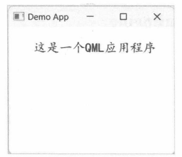
19.3.3 QQuickView
QML 文档中的 Window 对象，对应的是 QQuickWindow 类（位于 QtQuick 模块)。该类继承了QWindow类，可以操作程序窗口。
不过，QQuickWindow 类不能直接加载 QML 文档，需要和 QQmlApplicationEngine 类一起使用。
流程如下：
- 用 QQmlApplicationEngine 对象加载 QML 文档。
- 获取 QML 文档的根对象。
- 将根对象作为 QQuickWindow 的子级。
下面是一个例子。
上述代码直接通过字符串加载QML文档（而不是独立的文件），所以QQmlApplicationEngine 对象要调用loadData方法来加载 QML(load方法只能从文件加载)。文档中只声明了一个Rectangle对象(它表示一个矩形)。获取到QML根对象（Rectangle对象）后，调用它的 setParent方法，将它的父节点设置为 QQuickWindow 的根对象，contentItem 方法总是返回一个不可见的 QQuickItem 对象。如此一来，Rectangle与QQuickWindow对象之间就建立了对象树，使得矩形能够顺利显示到窗口中。
为了简化代码，Qt提供了QQuickView类。该类派生自QQuickWindow，集成了QQuickWindow类和QQmlApplicationEngine类的功能。因此，使用 QQuickView类创建 QML窗口只需要在调用构造函数时指定 QML 文档的路径即可。
19.3.4 示例：使用 QQuickView 类加载 QML 文档
本示例将通过QQuickView类直接加载QML文档并自动整合到窗口的内容模型中。以下是示例所使用的QML 文档（文件名为 demo.qml)。
上述 QML 文档声明了矩形对象，其填充颜色为红色，anchors.fill: parent 表示该矩形将填满它的容器（本示例中的容器是窗口）。parent 引用的是矩形的父级对象。
在矩形内部使用 Text 对象呈现文本Hello App。anchors.horizontalCenter属性的值与窗口的horizontalCenter属性绑定，让矩形水平居中；同理，anchors.verticalCenter属性可让矩形垂直居中。
随后，在 Python 代码中实例化 QQuickView类，并传递 QML 文档的路径：
本示例的运行结果如图19-3所示。
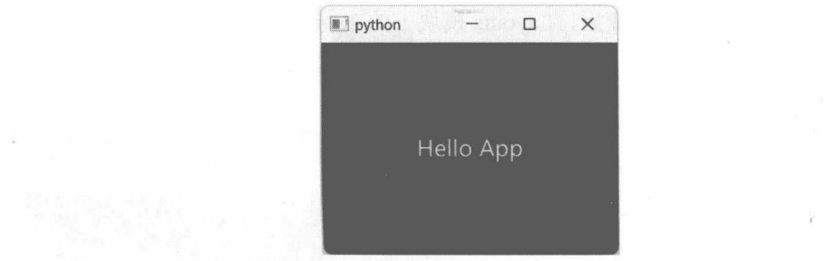
QQuickItem 类
该类位于QtQuick模块中，是QtQuick可视化对象的公共基类。它定义了一些通用属性，如描述对象位置的 x、y属性，表示宽度的 width 属性，表示透明度的 opacity 属性等。前文示例中用到过的Rectangle、Text 等都是 QQuickItem 的派生类，在 QML 文档中的名称是 Item。如果不需要设置背景颜色、字体等属性，QML文档可以直接使用Item作为根对象，例如：
虽然QQuickItem的多数派生类无法在代码中使用，但可以通过它们的公共基类QQuickItem来访问(如读取或修改某个属性的值)。下面的代码将在加载QML后修改3个Text对象的文本：
rootObject 方法可以返回 QML 文档的根对象，在上述例子中是 Item 对象。根对象调用 childItems方法可以返回子对象列表(上述例子中是 Text 对象)。最后通过 setProperty 方法就可以修改 text属性了。
布局
和 Qt Widgets一样，QML 在图形界面排版中也使用布局对象。这些布局对象是在 QtQuick模块中定义的，并且可以归纳为三大类。
- 直接定位。使用x、y、z属性设置对象的坐标。注意，z属性设置的是Z-Index顺序（可视化的分层效果，位于顶层的对象会遮挡其他对象)。
- QtQuick 模块提供的布局对象，如 Row、Column、Grid 等。这些对象使用方便，适用于简单布局。其缺点是不会自动调节可视化对象的大小，即处于布局内的对象需要设置width和height属性。
- QtQuick.Layouts 模块提供的布局对象。它是 QtQuick 的子模块，包括 GridLayout、RowLayout、ColumnLayout等。当布局空间发生改变后，Layouts模块下的布局对象能够自动调整可视化对象的大小。
19.5.1 示例：使用x、y属性定位矩形
本示例将通过 QML文档创建3个矩形对象（Rectangle)，同时为它们设置x和y属性。QML 文档如下：
上述 QML 所定义的3个矩形在呈现之后会出现重叠，即后添加的对象会遮挡前面的对象。第一个矩形的坐标是(15,10)，第二个矩形的坐标是(45,40)，第三个矩形的坐标是(80,75)。x、y 属性设置的是绝对位置，不管程序运行后是否调整窗口大小，它们的位置和大小始终不变。
下面的代码用于加载上述QML。
示例运行效果如图19-4所示。
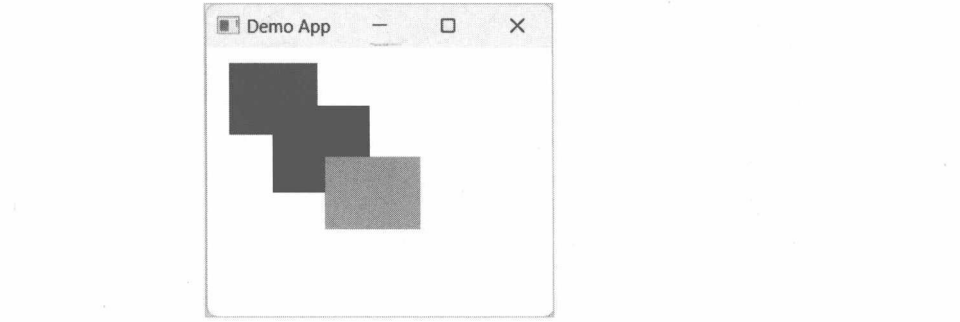
19.5.2 示例：Z顺序
z属性并不是用来设置具体的坐标值，而是Z顺序。z值较大的对象会位于z值较小的对象之上。
默认情况下，Z顺序与对象的声明次序一致。假设依次声明对象A、B、C，那么它们的z属性分别是0、1、2。如果3个对象之间有重叠区域，B会遮挡A，C会遮挡B。
可以通过调整z属性来改变Z顺序，例如：
修改后会使A对象在最顶层，C对象在最底层，于是A会遮挡B，B会遮挡C。
本示例将演示通过z属性重新编排4个矩形的Z顺序。QML如下：
4个矩形的z属性值依次是0、1、0、1，即第二、第四个矩形会遮住第一、第三个矩形，如图19-5所示。
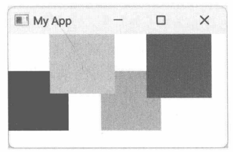
19.5.3 示例：Column
列布局使用的是Column对象，子对象沿垂直方向排列。其中，以下属性可微调布局的空间间隔。
- padding:设置布局对象与内容之间的边距（上、下、左、右边距相同）。
- topPadding:内容的顶部与布局对象之间的边距。
- rightPadding:内容的右侧与布局之间的边距。
- bottomPadding:内容底部与布局之间的边距。
- leftPadding:内容左侧与布局之间的边距。
- spacing:布局内各对象间的间隔。
下面QML将在窗口上声明 5 个Text 对象，它们使用 Column布局。
Column 对象的布局效果如图19-6所示。
19.5.4 示例：Row
行布局用到 Row 对象。该对象的用法与 Column 对象（列布局）相似，可以用 spacing 属性指定子对象的间距，也可以通过 padding属性设置内容边距（包括 leftPadding、topPadding等属性）。
本示例将用 Row 对象排列4个矩形，QML如下：
4个矩形的宽度和高度相同，并沿水平方向排列。Row对象的布局效果如图19-7所示。
19.5.5 示例：Grid
网格布局对应的是Grid对象。该对象会依据列数和行数，将布局空间划分出多个单元格。子对象被放到这些单元格中，并且自动定位到单元格的左上角（坐标是(0,0)，无法用x、y属性修改)。尽管不能自定义坐标，但可以用horizontalItemAlignment属性设置水平方向的对齐方式，或用verticalItemAlignment属性设置垂直方向上的对齐方式。
Grid对象默认划分出4列，而行数根据要放置的子对象来计算。可以通过 columns和rows属性修改。
如果Grid中所划分的单元格比子对象多，剩余的行和列将不可见(其实是行高和列宽均被设置为0)。
Grid将自动排列子对象，子对象不能选择目标单元格。要使用更灵活的网格布局，可以使用GridLayout 对象（在 QtQuick.Layouts 子模块中）。
下面QML将设置Grid对象使用三列两行（共6个单元格），其中放置了6个子对象。
horizontalItemAlignment属性设置子对象在单元格中的水平对齐方向，可用的值有 Grid.AlignLeft(左对齐）、Grid.AlignRight（右对齐)、Grid.AlignHCenter（居中)；verticalItemAlignment属性设置子对象在单元格中的垂直对齐方向，可用的值有Grid.AlignTop（顶部对齐）、Grid.AlignBottom（底部对齐）、Grid.AlignVCenter（居中)。horizontalItemAlignment 和 verticalItemAlignment 属性的值不是针对单个子对象的，而是应用于所有子对象。
Grid对象是按照从左到右、从上到下的顺序排列子对象的。本示例设置的总列数为3，即每行只能放置3个对象，剩下的内容会移到下一行。Grid中子对象的排列方向如图19-8所示。
本示例的运行结果如图19-9所示。
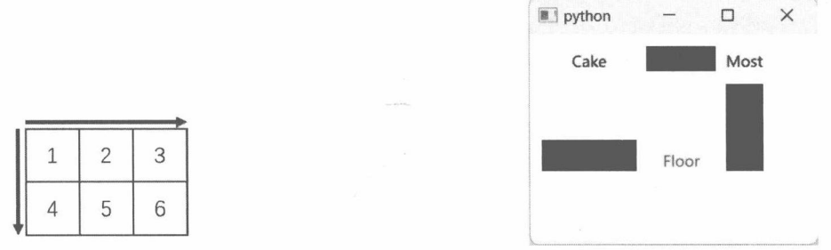
19.5.6 示例：RowLayout
本示例将使用 QtQuick.Layouts 模块中的 RowLayout 对象让 3 个矩形水平排列。RowLayout 可以使用Layout对象提供的附加属性来设置更多的参数。附加属性允许在A类的对象中引用B类所定义的属性。B的实例化过程是自动的，使用时只需用类型名称B来引用属性即可，例如：
附加属性是一种具有特殊功能的属性，如 QtQuick.Layouts 模块下的Layout类。该类公开的属性成员均为附加属性，布局中的子对象可以引用这些附加属性，如fillWidth属性表示当前对象会自动填充布局中的所有可用空间。这个功能在RowLayout、GridLayout等布局中通用，因此将 fillWidth 定义为附加属性可避免在 RowLayout、ColumnLayout 和 GridLayout 中重复实现相同功能的属性。
本示例的QML文档如下：
3个矩形的高度都是45。第二个矩形没有设置宽度，而是将Layout.fillWidth附加属性设置为 true，表示该矩形的宽度会自动拉伸以填充所有剩余空间。
示例程序运行后如图19-10所示。
注意第二个矩形的宽度不是固定的，如果拉伸窗口的宽度，RowLayout对象会自动调整该矩形的宽度，让它始终填满所有可用空间，如图19-11所示。
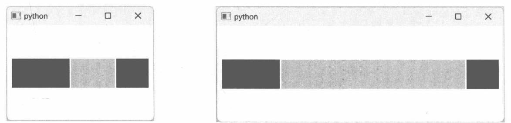
19.5.7 示例：在 GridLayout 中定位子对象
GridLayout 对象的 rows属性用于指定总的行数，columns属性指定总的列数。而要控制子对象定位到特定的单元格中，需要使用Layout.row和Layout.column附加属性。例如：
附加属性Layout.row 指定子对象定位的行号（从0开始），Layout.column属性则用于定位子对象的列号（也是从0开始）。上述QML中，子对象S将位于第二行、第一列的单元格中。
本示例将声明三行三列的网格（共9个单元格），并在其中布局5个子对象。QML文档如下：
上述QML所声明的网格有9个单元格，但只声明了5个子对象。第一行的第一、三列包含矩形对象；第二行只有第二列包含文本对象；第三行中第一列包含图形路径对象(Shape)，第三列包含矩形对象。
示例的运行效果如图19-12所示。
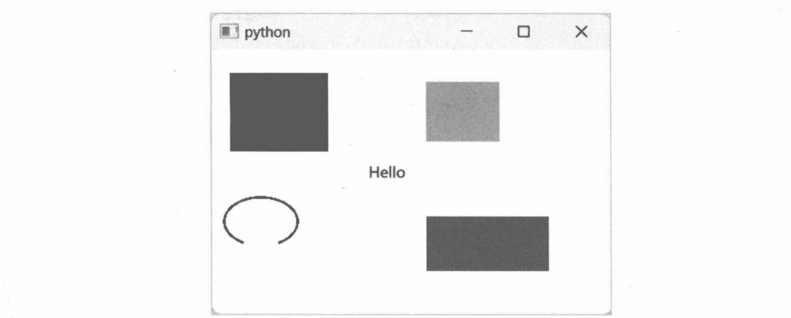
控件基类——Control
Qt Quick 提供了与 Qt Widgets 相似的控件库，可以构建更加完善的 QML 应用程序界面。人机交互通常需要很多复杂的可视化元素，仅使用Rectangle、Text等简单对象无法满足实际开发需求。因此，Qt Quick 库新增了 Controls 子模块，包含搭建用户界面最常用的控件，如 Button（按钮）、ComboBox（组合列表框）、CheckBox（复选框)、MenuBar（菜单栏）等。
Control 是 Qt Quick 控件的基类，定义了一些通用属性。在 QML文档中是可以直接使用 Control 对象的，例如：
使用 Qt Quick 控件前，需要先导入 QtQuick.Controls 子模块。为了配合控件功能，QML 文档的根对象建议使用 ApplicationWindow；该对象还可以设置菜单栏、工具栏等。
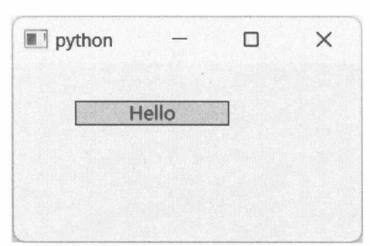
上述 QML 文档声明了 Control 对象。background 属性用于设置控件背景，此处使用 Rectangle 对象；contentItem 属性定义控件的内容区域，此处使用 Text 对象显示文本。contentItem 将呈现在 background 之上。
19.6.1 示例：处理鼠标单击事件
要在Control对象中实现捕捉鼠标事件功能，需要借助MouseArea对象。该对象表示一个区域（呈现为透明)，在此区域内能够捕获鼠标操作行为，如按下左键、释放左键、单击、双击等。当捕捉到特定事件后，MouseArea对象会发出相关的信号，与信号绑定的代码就会执行。
MouseArea 对象公开以下信号。
- pressed：鼠标按键按下后发出。触发信号的按键可能是左键、中键或右键。这取决于用户行为以及 acceptedButtons 属性（MouseArea 对象的属性）的值。acceptedButtons 属性的默认值是 Qt.LeftButton，即只响应鼠标左键。如果希望响应左右按键，可以将 acceptedButtons属性设置为Qt.LeftButton|Qt.RightButton（“|”是OR运算符，可以合并两个值）。
- released：鼠标按键释放时发出。
- pressAndHold：按下鼠标按键并持续800毫秒以上就会发出该信号。
- clicked：单击事件，包含鼠标按下和释放两个过程。
- doubleClicked：双击事件。
在QML文档中访问信号成员时需要在名称前面加上 on，例如，clicked信号在访问时要变为onClicked。
本示例将实现Control对象被单击后改变背景颜色和文本。QML文档如下：
id属性可以为对象分配一个唯一的名称，之后就可以在JavaScript代码中引用它。在本示例中，作为背景的矩形对象被命名为 rect，文本对象被命名为 txt。这两个对象将在处理 clicked（onClicked）信号时访问。代码表达式只要符合 JavaScript 语法即可，本示例中修改了矩形对象的color属性以及文本对象的 text 属性：
代码语句最后的分号可以省略，例如：
多个语句写在一行时，分号不能省略，例如：
示例运行后如图19-14所示。
此时，单击一下控件，随后控件的背景会变成红色，显示的文本变为“已单击”，如图19-15所示。
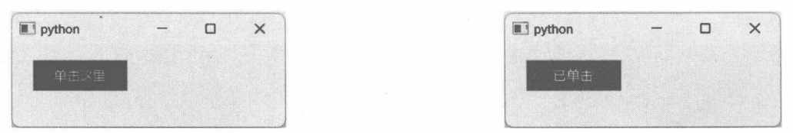
19.6.2 示例：处理键盘事件
控件接收键盘事件可以使用Keys对象（该对象适用于所有可视化对象)。Keys对象不需要在QML文档中声明，它的成员将作为附加属性公开，控件（或其他可视化对象）可以直接引用。
当用户按下键盘上某个键时，Keys 对象就会发出 pressed 信号（QML 引用名称为 onPressed)；当释放按键时会发出 released 信号（QML 文档引用名称为 onReleased)。信号发出时会携带一个 KeyEvent对象，它包含详细的按键信息，如按下了哪个键，是否同时按下Ctrl、Shift等按键，等等。
另外，Keys对象还为一些特殊的按键定义了专用信号。例如，当用户按下【Enter】键时会发出enterPressed信号，当按下 Tab 键时会发出 tabPressed信号，当按下数字 9时会发出 digit9Pressed 信号……本示例所演示的控件中包含3个矩形，它们默认填充为黑色。通过数字按键改变矩形的填充颜色，规则如下。
- 按下数字1时，第一个矩形变成粉红色，其他矩形变成黑色。
- 按下数字2时，第二个矩形变成蓝色，其他矩形均为黑色。
- 按下数字3时，第三个矩形变成黄色，其他矩形变为黑色。
完整的QML文档如下：
上述 QML 文档中，contentItem 属性使用的是 RowLayout 对象，即控件的内容区域使用行布局。
RowLayout 对象内声明 3 个矩形对象，用 id 属性分别命名为 rect1、rect2、rect3，稍后在处理 Keys 对象的信号时可以引用它们，以便修改 color 属性。这里要注意的是，RowLayout 对象的 focus 属性必须设置为true，使3个矩形所在的区域获得键盘输入焦点，否则Keys对象无法正常使用。
由于本示例只需要监听数字键1、2、3，所以可以直接连接onDigit1Pressed、onDigit2Pressed、onDigit3Pressed信号即可。Keys对象能以附加属性的方式引用，不需要声明对象，即
运行示例程序，如图19-16所示，此时3个矩形都是黑色的。
此时，按下数字键2，中间的矩形会变成蓝色，如图19-17所示。
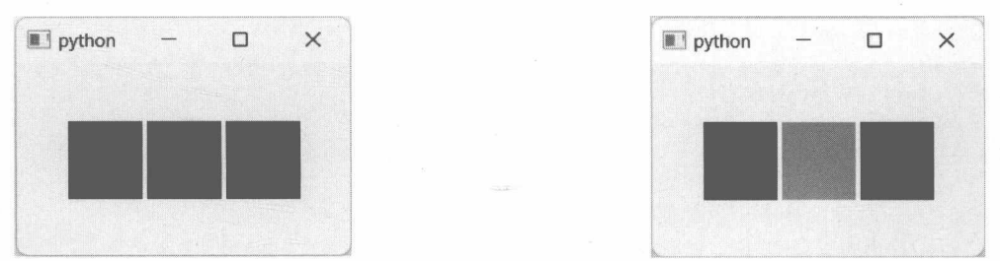
按钮控件
QtQuick 中按钮的公共基类是 AbstractButton类（C++类是QQuickAbstractButton)。该类定义了按钮控件的通用成员，如 text、icon、checked 等属性，该类与 Qt Widgets 中的 QAbstractButton 类相似。
QtQuick.Controls模块提供的按钮控件如下。
- Button：普通按钮。
- RoundButton：圆角按钮，功能与 Button 控件一样。RoundButton 控件可以通过 radius 属性设置一个半径值，使按钮呈现出圆角外观。
- CheckBox：复选框。同一容器下，可以同时选择多项。
- RadioButton：单选按钮。同一容器内，在同一时间只能选择一项。
- Switch：“开关”控件，具有On、Off两种状态，通过单击或拖动使其在两个状态间切换。
- DelayButton：延时按钮。该按钮被按下时会进入倒计时（默认300毫秒)，同时会显示一个进度条。等进度条走满后，按钮将进入checked状态，并发出 activated信号。
19.7.1 示例：Button
作为最常用的按钮控件，Button的核心成员是两个信号。
- clicked：按钮被单击后发出。
- doubleClicked：按钮被双击后发出。
本示例将在应用程序窗口上声明两个Button控件，然后分别处理它们的 clicked 信号，通过console.log方法向控制台输出文本。QML 文档如下：
这里要注意一下 RowLayout 对象的定位锚点（Anchors）参数：
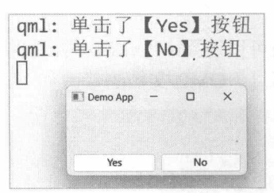
anchors.bottom属性表示RowLayout对象的下边沿，它的值引用parent.bottom，表示与父级对象的下边沿重合（对齐）。parent即RowLayout对象的parent属性。在本示例中，RowLayout对象的父级就是窗口对象（ApplicationWindow）。同理，parent.top表示对齐父级对象的顶部边沿。
top、left、right、bottom、horizontalCenter、verticalCenter等是Item类的内部属性，只能在QML文档中访问。Button对象的text属性设置要显示在按钮上的文本，onClicked即clicked信号。console.log继承了JavaScript的对象命名，可用于向控制台输出日志。
运行示例程序，然后单击窗口下方的Yes或No按钮，控制台会打印对应的内容，如图19-18所示。
19.7.2 示例： CheckBox
CheckBox对象之间相互独立，可以同时选中多个 CheckBox 对象。本示例将创建 5个 CheckBox对象，具体的QML文档如下：
运行示例程序，5个CheckBox对象之间的选择状态互不影响，如图19-19所示。
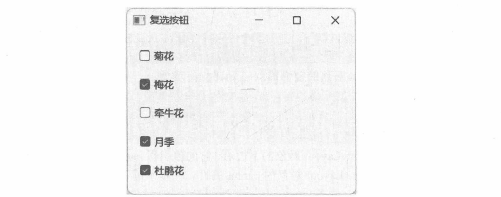
还可以连接 CheckBox控件的 toggled信号，当选项的状态（被选中或取消选中）改变后向控制台打印消息。QML文档的修改如下：
logInfo 是自定义函数，它有一个 sender 参数，在连接到 CheckBox 对象的 toggled 信号时接收 this关键字指向的对象引用，即当前 CheckBox 对象。在 logInfo 函数内部，通过判断 checked 属性可知CheckBox对象是否处于选中状态，并输出相应的文本。
再次运行示例程序，当窗口中的CheckBox控件被选中（或取消选中）后，控制台将打印以下消息：
19.7.3 示例：RadioButton
RadioButton属于单选按钮，同一容器内的RadioButton对象相互排斥，即同一时刻只能有一个对象被选中。不同容器间的RadioButton对象互不影响。
本示例将构建两组 RadioButton 对象，各包含 4个 RadioButton 实例。分组容器是 ColumnLayout 对象。完整QML文档如下：
运行示例程序，这时会看到，只有位于同一个 ColumnLayout 对象下的 RadioButton对象才会相互排斥，如图19-20所示。
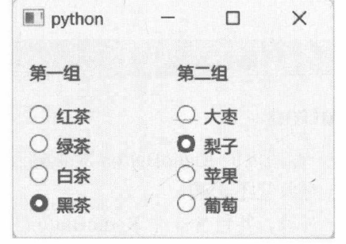
19.7.4 示例：ButtonGroup
ButtonGroup类可以为按钮分组。该类公开clicked信号，分组内任意按钮被单击后都会发出此信号。
clicked 信号带有一个AbstractButton类型的参数，即被单击按钮的引用。由于 ButtonGroup类面向的按钮类型是 AbstractButton，因此 CheckBox、RadioButton 等控件也可以加入 ButtonGroup 对象中。
当用户界面上有多个按钮时，将它们添加到ButtonGroup对象中，再统一处理clicked信号，比逐个处理 clicked信号要省事很多。
本示例将在窗口上声明4个按钮对象，并把它们添加到ButtonGroup对象中。然后处理clicked信号，在Label控件中显示被单击按钮的文本。完整的QML文档如下：
将 Button 对象添加到 ButtonGroup 对象要使用 ButtonGroup.group 附加属性，即
本示例中，ButtonGroup 对象的 id 为 btnGroup，因此 Button 对象使用附加属性时可通过此 id 来引用ButtonGroup对象。例如：
运行示例程序，然后随机单击窗口上的按钮，Label控件会显示相关的信息，如图19-21所示。
输入控件
输入控件可以分为文本输入和数值输入。文本输入包括 QtQuick 模块提供的TextInput 和 TextEdit对象，QtQuick.Controls 模块提供 TextField、TextArea 对象；数值输入有 QtQuick.Controls 模块提供的Slider（滑动条）、RangeSlider（带两个滑块的滑动条）、SpinBox（带递增、递减按钮的数值输入框）、Dial（表盘）等。
19.8.1 示例：TextInput
TextInput 是 QtQuick 模块提供的类。TextInput 对象可以放置在其他对象（如 Rectangle）内，或覆盖在其他对象之上，可接收键盘输入并显示已输入的内容。用户可以通过键盘上的方向键移动输入光标，也可以用鼠标选择文本。使用【Delete】键或【Backspace】键可删除文本。
访问 text属性可以获取或设置 TextInput 对象中输入的文本。selectedText属性可以获取被选定的文本。一般需要将 focus属性设置为 true，否则 TextInput 对象无法接收键盘输入。
当用户按下【Enter】键，或者输入框失去焦点后，TextInput 对象会发出 editingFinished信号。
本示例将演示TextInput对象的简单用法。窗口中使用Column布局，布局内包含一个矩形(Rectangle）对象和一个文本（Text）对象。TextInput 对象位于 Rectangle 对象内。当 TextInput 对象接收到文本输入后，会实时显示在Text对象上。
具体的 QML文档如下：
TextInput对象分配了名为input的标识，Text对象的text属性将与input.text属性绑定，通过JavaScript的格式化字符串（在两个反引号（`）字符之间）来引用已输入的文本。
示例运行后，输入“大好河山”，Text对象中就会同步显示文本，如图19-22所示。
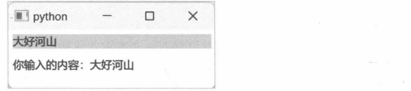
19.8.2 示例：TextField
TextField派生自TextInput类，新增了设置字体（font）、背景（background）、占位符文本(placeholderText)等属性，使用方法与 TextInput一样。
本示例将在窗口中声明两个TextField对象。输入文本后单击“确定”按钮，结果将显示在 Label对象中。QML文档如下：
placeholderText属性设置的是文本框的占位文本（水印文本），只在TextField对象未输入任何内容时显示，其作用是简单说明需要填写的内容，如“请输入姓名”。
运行示例程序后，依次输入文本，然后单击“确定”按钮，效果如图19-23所示。
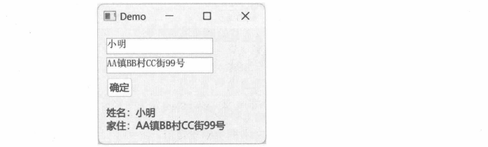
19.8.3 示例：SpinBox
SpinBox控件用于输入数值。用户可以在文本框中直接输入数值，或者通过递增/递减按钮进行微调。
from、to属性设置 SpinBox控件的数值范围，value属性表示控件当前设置的值。递增/递减按钮的步长值可通过 stepSize属性设置，即每次单击按钮后数值会增大/减小的量，例如 SpinBox的当前值为 5，设置 stepSize属性的值为3后，那么单击一次递增按钮后数值会变为8。
本示例将演示 SpinBox 控件的用法，QML 文档如下：
本示例中SpinBox控件的数值范围是[100,3000]，步长值为5，设置的初始值为300。
Text 对象的 text 属性与 SpinBox 控件的 value属性进行了绑定。当 SpinBox 控件中的数值更新后，Text对象中的文本也同步更新，如图19-24所示。
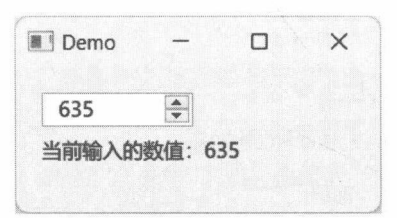
SpinBox 控件默认不允许直接在文本框中编辑数值，必须手动设置 editable属性为 true才能在文本框中输入数值。QML代码如下：
19.8.4 示例：SpinBox中数值与文本的转换
SpinBox控件公开如下一对属性，可以实现数值与文本之间的自定义转换。
- textFromValue：根据数值返回对应的文本。属性值为 JavaScript函数对象，签名如下：
value参数是 SpinBox控件中的当前数值，locale参数是当前使用的语言/区域对象（QLocale类)。
返回值是转换后的文本。
- valueFromText：根据文本内容返回对应的数值。其属性值为 JavaScript 函数，签名如下：
text参数是待转换的文本，locale参数是当前所使用的语言/区域对象。函数要返回转换后的数值。
上述两个属性的赋值可以使用lambda表达式，即
本示例将使用 textFromValue属性将数值转换为文本“X星级用户”。其中，X表示 SpinBox 控件的当前数值。例如，当前数值为5，那么 SpinBox控件上就会显示“5星级用户”。完整的QML文档如下：
Label 控件的 text 属性与 SpinBox 控件绑定，实时显示当前数值。示例程序的运行效果如图19-25所示。
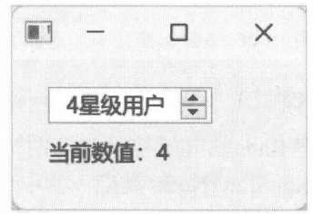
19.8.5 示例：Slider
Slider控件允许用户拖动滑块来调整数值，操作便捷。与 SpinBox控件相似，Slider控件也通过from、to属性来设置数值范围，通过value属性可以读写当前数值。
orientation属性用于设置滑动条的呈现方向，支持水平和垂直方向，即
本示例将在窗口中声明 Slider和Label控件。Label控件负责实时显示 Slider控件的值。完整的QML文档如下：
运行示例程序，拖动 Slider 控件的滑块，Label 控件所显示的数值会立即更新，如图19-26所示。
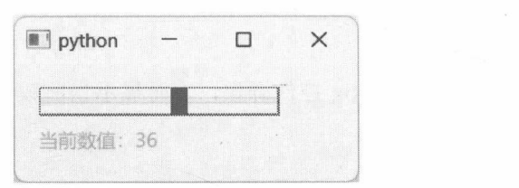
19.8.6 示例：RangeSlider
RangeSlider 与 Slider 控件类似，但 RangeSlider控件带有两个滑块，可以选择两个数值，由 first和second 属性公开。这两个属性都是 RangeSliderNode 类型，其中最常用的是它的 value 属性，表示当前节点的数值。
本示例将在窗口中声明 RangeSlider 控件，分别处理 first 和 second 属性的 moved 信号（当滑块被拖动后就会发出此信号)，在Label控件中显示最新的数值。
完整的QML文档如下：
RangeSlider 控件所使用的数值是 qreal 类型（双精度数值）。因此，from、to、stepSize 等属性既可以使用整数值，也可以使用浮点数值。
运行示例程序后，分别拖动两个滑块，就能看到 first和second属性的值，如图19-27所示。
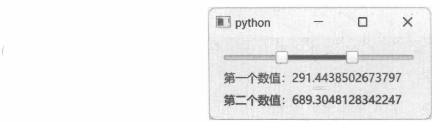
RangeSlider控件适用于要通过选取两个值来确定某个范围的情形。例如，RangeSlider控件用于表示声音频率，from属性指定可用的最小频率为20Hz，to属性指定最大频率为25000Hz。用户需要通过该控件选取一段频率进行后期加工，first 属性选取的值是 100Hz，second 属性选取的值是 5000Hz。那么，这两个数值可以构成一个频率范围（100~5000Hz）。
菜单
Menu对象单独声明时，可作为弹出菜单（上下文菜单），也可以添加到菜单栏（MenuBar）中。菜单项由MenuItem对象表示，它的基类是AbstractButton，继承了text等属性。但作为菜单项，一般不需要处理 clicked信号，而是处理 triggered信号（MenuItem 对象被单击后会发出该信号)。
Menu的基类是Popup，可在用户界面上方弹出一个浮动层。可以使用x、y、width、height等属性设置Popup对象的位置和大小。下面是一个简单的Popup示例，单击按钮后弹出浮动层（如图19-28所示），随后可以单击“关闭”按钮（或单击弹出层以外的地方）将其关闭。
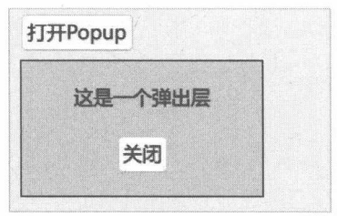
19.9.1 示例：上下文菜单
本示例将通过上下文菜单（右键菜单）来改变矩形（Rectangle）对象的宽度和高度。QML文档如下：
为了让Rectangle对象能接收鼠标事件，需要在其子级声明一个MouseArea对象。设置MouseArea.acceptedButtons 属性为 Qt.RightButton 限制该对象只响应鼠标右键操作。
在处理clicked信号时，它带有一个参数（event)，类型为MouseEvent。此参数将包含与鼠标事件相关的信息，如鼠标指针的当前坐标（x、y属性），用户按下了哪个按键（button或buttons属性）。由于 MouseArea 是 Rectangle 对象的子级，因此 x、y 属性获取的坐标是相对于 Rectangle 对象的；并且Menu 也是 Rectangle 的子对象，调用 popup 方法时所传递的坐标的参考对象也是 Rectangle。如果 Menu是ApplicationWindow的子对象，那么在调用popup方法时所传递的坐标的参考对象是窗口。显示菜单的坐标需要加上 Rectangle对象的x、y值，即
示例在Menu对象内添加了3个菜单项，同时处理它们的triggered信号，通过JavaScript代码修改Rectangle对象的width、height属性。
运行示例程序，在窗口中右击，便可以通过上下文菜单改变矩形的大小了，如图19-29所示。
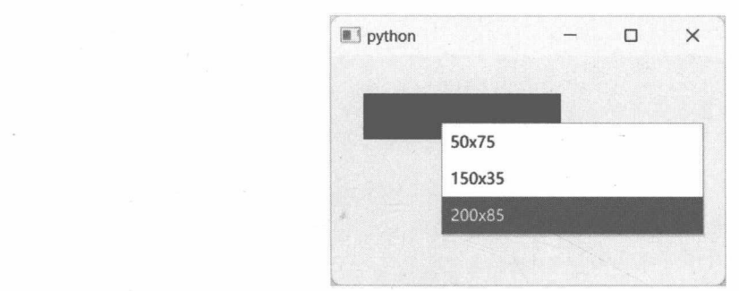
19.9.2 示例：使用Action对象
Qt Quick的菜单也可以通过 Action对象添加菜单项。Action 对象的常用属性如下。
- text:设置菜单项显示的文本。
- icon：设置要显示的图标。
- checkable:指定菜单项是否具有check功能。
- enabled：设置菜单项是否可用。若为False，则菜单项将不可用（无法操作）。
- shortcut：设置激活菜单项的快捷键，可以用字符串描述快捷键，如“Ctrl+D”。
菜单项被激活后，Action 对象会发出 triggered信号。该信号带有一个 source参数，表示触发信号的控件，如 MenuItem等。
本示例将使用Action对象添加菜单项。菜单将显示在按钮（Button）控件的下方。当用户单击菜单后，标签（Label）控件上会显示被选中的菜单。完整的QML文档如下：
调用 popup 方法显示菜单时，通过 Qt.point 函数生成菜单的显示坐标。在本示例中，菜单的 X 坐标与 Button 对象相同，Y 坐标是 Button 的 Y 坐标与高度之和，这样才能让菜单显示在按钮下方。在处理 Action 对象的 triggered 信号时，source.text 表示获取被选中菜单项的文本。
运行示例程序，单击“显示菜单”按钮，弹出上下文菜单。选择执行其中一个命令后，窗口底部会显示被执行的菜单项，如图19-30所示。
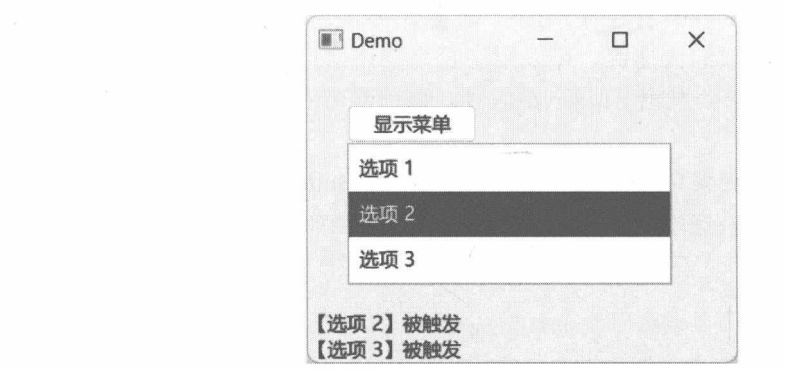
19.9.3 示例：菜单栏
声明 MenuBar 对象，然后赋值给 ApplicationWindow 对象的 menuBar 属性就可以为应用窗口创建菜单栏了。
MenuBar 对象中可以添加 Menu列表。每个 Menu 对象表示一组菜单，可通过 title 属性设置菜单标题（该标题显示在菜单栏上）。
本示例将构建包含两组菜单的菜单栏，完整的QML文档如下：
上下文菜单由于不显示标题，可以不设置 title 属性；但菜单栏（MenuBar）中的菜单需要显示标题，因此应设置 title 属性。直接在 MenuBar 中声明 Menu 对象即可添加菜单，Menu 对象内可以使用 Action 或 MenuItem 添加菜单项。ApplicationWindow 公开了专门用于设置菜单栏的 menuBar 属性，不要把 MenuBar 声明为 ApplicationWindow 的普通子级对象，否则会造成布局问题。
上述 QML 中，第二组菜单的各个菜单项均将 checkable 属性设置为 true，使其具有类似 CheckBox 控件的选择效果；单击菜单项即可切换选中状态。
运行示例程序，效果如图 19-31 所示。
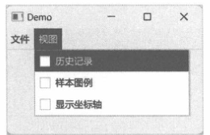
19.9.4 示例：带图标的菜单项
MenuItem是 AbstractButton 的派生类，因此继承了如 text、icon等属性。其中，icon 属性用于为菜单项设置图标。icon 属性的类型是 Icon(C++类型为 QQuickIcon)，不过在 QML 文档中不能直接向 icon属性赋值 Icon 对象，而是向 Icon 对象的 name或 source 属性赋值。name 属性指定图标的名称，该加载方案由主题样式提供，并非每个平台都可用；或者使用自定义URL来加载图标，即设置source属性。
如果菜单项使用 Action 对象来声明，同样可以使用 icon.name和icon.source属性，例如：
本示例将通过 MenuItem 对象创建 6 个带图标的菜单项。图标文件位于应用程序目录下，使用 source 属性加载图标。完整的 QML 文档如下：
建议使用尺寸为16×16或24×24的图标。示例的运行效果如图19-32所示。
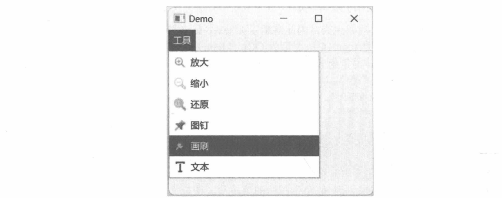
工具栏
ToolBar对象用于声明工具栏。通常，工具栏对象内部应先声明布局对象(如RowLayout)，然后在布局对象中添加ToolButton对象（也可以是其他可视化对象，但ToolButton最常见）。
ToolButton 表示工具栏按钮，它派生自 Button类，因此在用法上与 Button 控件相同。只是 ToolButton控件在初始化时会根据主题样式设置专用字体。
许多时候，菜单栏中的菜单项与工具栏中的按钮具有相同的功能。为了避免重复的实现代码，建议使用Action对象。工具栏按钮和菜单项都可以引用相同的Action对象。
ApplicationWindow对象有两个属性可以设置工具栏。
- header：工具栏位于窗口顶部（如果有菜单栏，将呈现在菜单栏下方)。
- footer：工具栏位于窗口底部。
下面的示例将为应用程序窗口创建顶部（header）和底部（footer）工具栏。完整的QML文档如下：
先在 ApplicationWindow 对象内声明要用到的 Action 对象，随后 MenuItem 和 ToolButton 对象均可引用。菜单栏与工具栏中的命令不一定要完全一致，按需引用Action对象即可（例如，菜单项未引用sort、find等Action对象，菜单列表就不会出现“排序”“查找”等项目)。
ToolButton 对象继承了AbstractButton类的 display 属性，可以设置图标与文本的排列方式，有效的值如下。
- IconOnly：只显示图标。
- TextOnly：只显示文本。
- TextBesideIcon：文本跟随在图标之后。
- TextUnderIcon：文本显示在图标下方。
由于 display 属性是在 AbstractButton 类中定义的，并且 Button、ToolButton 类型都继承了该属性，因此在设置 display 属性时，使用 AbstractButton、Button 或 ToolButton 类来引用 Display 枚举的值都是可以的（上述示例用的Button类），即
运行应用程序后，工具栏的外观如图19-33所示。
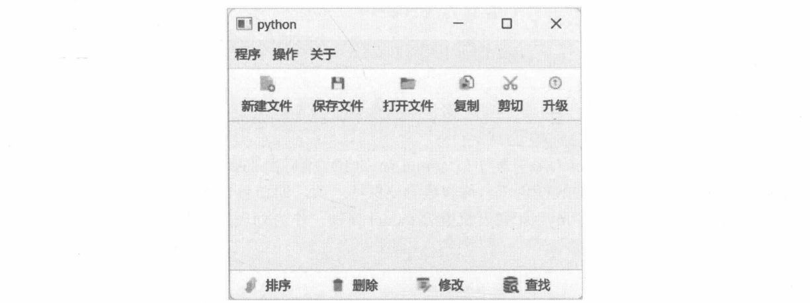
列表控件——ListView
ListView控件用于呈现数据列表，数据列表由model 属性定义。目前，常用的 model类型有ListModel、ObjectModel、XmlListModel，而 TableModel 仍处于试验阶段，不建议在实际项目中使用。
model属性只是定义了要显示的数据列表，而数据列表的显示方式和布局则需要delegate属性来定义。
该属性为每个待呈现的数据项构造一个模板，其中可以包含各种可视化元素（如Text、Rectangle等)。
19.11.1 ListModel
ListModel 是最常用的数据列表模型。它内部包含一组 ListElement 对象，每个 ListElement 对象代表一个数据项实例。ListElement对象内部是动态定义的数据角色（role）列表，用于描述列表项数据，功能上与对象属性相似。其格式类型为字典集合，例如：
数据角色的名称必须以小写字母开头，如boxWidth、email、body等。
19.11.2 示例：使用ListModel 类定义简单列表
本示例将通过ListModel 对象来定义一个列表。其中，每个ListElement对象包含3个数据角色（属性），QML代码如下：
上述代码同时为 ListModel 对象分配了值为 myList 的 ID，稍后由 ListView 控件的 model 属性引用。
注意每个ListElement元素中的数据角色名称和数量要保持一致，即要包含lineID、lineDesc等字段。
创建 ListView 控件，并将 myList 列表赋值给 model 属性，作为列表控件的数据来源。
示例的运行效果如图19-34所示。
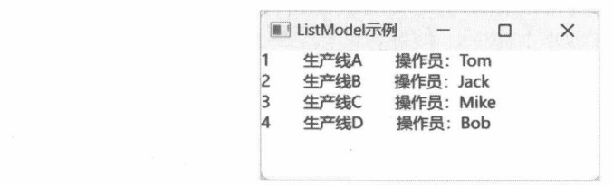
19.11.3 代理
ListView控件的 delegate属性用于设置一个代理对象，通常是Component类型。代理对象的作用是定义列表项的显示和布局方式，即为列表项创建一个外观模板。位于代理对象中的元素支持与ListModel/ListElement 中的数据角色直接绑定。例如，下面QML表示使用Text对象来显示列表项，并且text 属性绑定到ListElement 元素中的 en 和 cn 字段。
en + "-> "+ cn 表示在 Text 对象中同时显示 en 和 cn 字段的值，并用“->”连接。效果如图 19-35所示。
绑定时使用常规的JavaScript表达式即可，可直接引用列表元素的字段，如上述QML中的 en。也可以使用运算符和调用对象成员，如下面QML所示，调用padEnd方法在字符串的末尾填充空格，使其长度达到15个字符。
效果如图19-36所示。
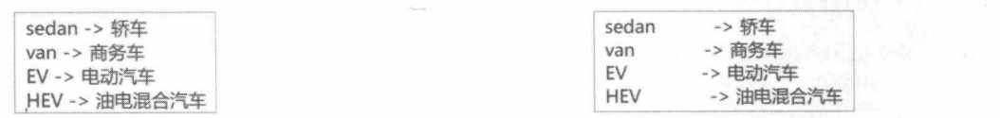
19.11.4 XmlListModel
XmlListModel对象以XML文档为数据源来定义列表模型。可以通过source属性指定要加载的XML文档路径。此路径既可以是本地文件，也可以是网络地址。随后，通过query属性进行筛选，确定哪些XML节点将显示在列表控件上。query属性是以“/”开头的XML节点路径，例如，“/samples/board”表示筛选 samples下的所有 board元素来充当数据源。
XmlListModel对象内部可以定义若干XmlListModelRole对象。其作用是公开一组自定义字段，以供 ListView 控件的代理对象使用（类似于 ListModel 中的 ListElement 对象)。其中，name 属性指定字段的名称，elementName 属性指定要绑定的 XML 元素名称，attributeName 属性则可以指定 XML 元素中某个特性的名称。加载 XML 文档时，XmlListModel 对象会根据 XmlListModelRole 对象所设置的属性去查找数据。
下面的示例先定义一个表示卡片信息的 XML文档，然后通过 XmlListModel对象加载并显示在ListView 控件中。
表示卡片信息的XML文档如下：
id 元素表示编号，size 元素表示卡片的尺寸，thickness 元素表示卡片的厚度，color 元素则表示卡片的颜色。
假设 XML 文件名为 test.xml，以下 QML 代码将定义 XmlListModel 对象，并指定该 XML 文件为数据源（XML文件与应用程序在同一目录下）。
上述 XmlListModel 对象被命名为 xmlSource，在ListView 控件中可直接引用（model属性)。
为ListView控件定义代理项，即用于显示列表项的可视化对象。
代理对象的根是 Column 对象，里面是若干 Text 对象。这些 Text 对象沿垂直方向布局。Text 对象的 text属性可以绑定到XmlListModelRole 对象所设置的字段名称。
示例的运行效果如图19-37所示。
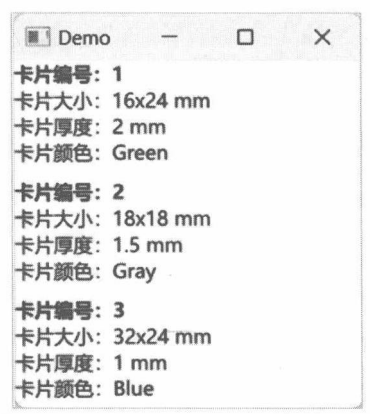
在 QWidget 中呈现 QtQuick 对象
QtQuickWidgets模块公开了QQuickWidget类。该类派生自QWidget，它可以实现QWidget与QtQuick组件的混合使用，在QWidget组件所构建的用户界面上呈现QtQuick对象。
在实例化 QQuickWidget对象时，可以直接把 QML文件的路径传递给它的构造函数。QQuickWidget对象在初始化过程中会加载QML文件所声明的对象，并与其他可视化组件一起呈现在窗口上。如果在调用 QQuickWidget 类构造函数时未传递 QML 文件的路径，也可以在实例化之后调用 setSource 方法来设置。
下面的示例将实现在QWidget对象中呈现QML文档，通过单击按钮改变矩形和文本的颜色。QML文档的内容如下：
x_color 是 Item 的自定义 color 属性，初值为蓝色。Rectangle 和 Text 的 color 属性都与它绑定；修改 x_color 后，两者会同步更新。
以下步骤将完成示例程序的主体代码。
- 实例化应用程序对象。
- 创建QWidget 实例，作为应用程序的主窗口。
- 创建布局。
- 实例化 QQuickWidget 对象，并通过构造函数指定 QML文件。
- 创建 3 个按钮。
- 定义3个函数，分别连接到上述按钮的 clicked信号。
调用 QQuickWidget 实例的 rootObject 方法会返回 QML 文档的根对象。本示例中是 Item 对象，对应的是 QQuickItem 类。
要修改 Item 对象中的属性（此处是修改自定义的x_color 属性），可以调用 setProperty 方法。参数依次是属性名称和属性值。setProperty 是 QObject 类的方法成员，QQuickItem类（QML文档中的 Item对象）继承了该方法，因此可用于修改属性。
- 显示窗口并启动主事件循环。
运行应用程序，矩形和文本的默认颜色是蓝色。单击窗口右侧的三个按钮，可分别把矩形和文本改为金色、灰色或深绿色，效果如图19-38所示。
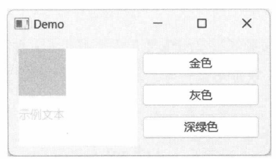